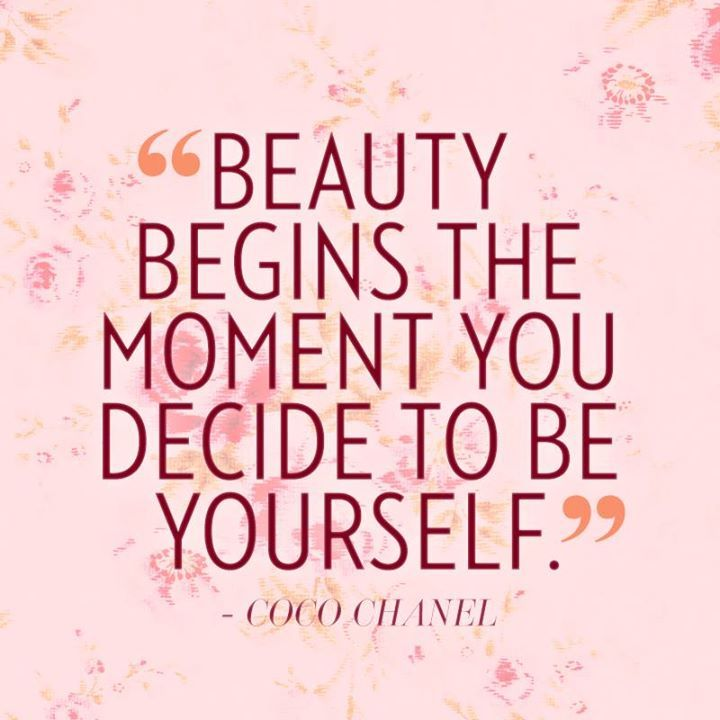
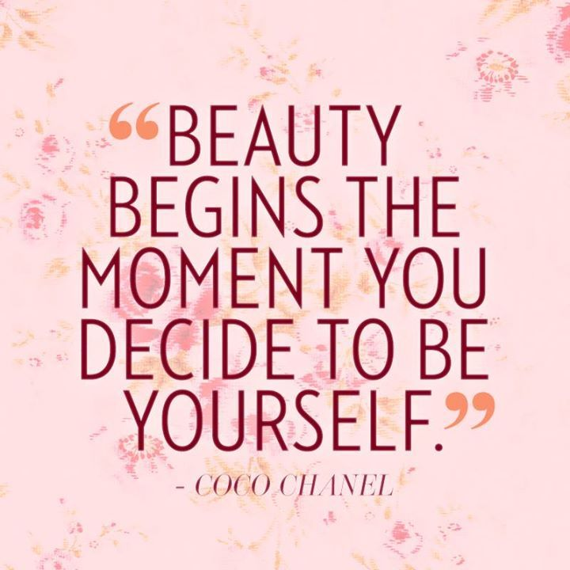
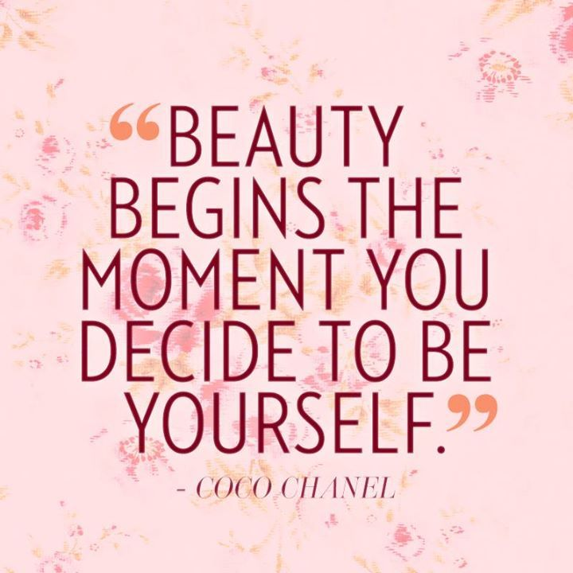
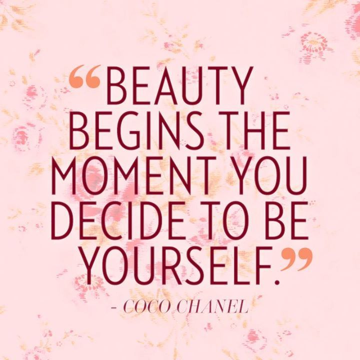

2014-2015: Attended Jimcy Academy for primary education and attained 383 marks
2016-2019: Attended Precious Blood Riruta for secondary education and scored a B+
2021- up to date: Studying at Moringa School for a certificate in Software Programming
My love for technology and passion for finding solutions to problems pulled me right towards programming.
Apart from programming,my other hobbies include reading novels, listening to great music, watching movies, and eating good food.
My skills include:
This project is about recreating a landing page of a restaurant called Anitas Kitchen.It uses HTML and CSS technologies.
Find the Anitas Kitchen project here
This project gives information about the Little Mix band.The biographies of all the four members have been included.A list of some of their songs and albums have been added.The project incorporates HTML and CSS technologies.
Find the Music Band project here
This website automates the monitoring of milk production in a farm.It uses HTML, CSS and JavaScript technologies.
Find the Dairy Business here